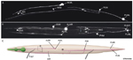
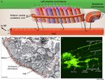

Handbook - Hermaphrodite
Nervous System General Description see also Neuronal Support Cells
2.1 Nervous system development
2.3 Motor neurons and the motor circuit
Figures NeuroFIG 1 - The C. elegans nervous system NeuroFIG 2A-C - Placement and topology of somatic neurons NeuroFIG 2D&E - Placement and topology of somatic neurons NeuroFIG 3 - Branching patterns of C. elegans neurons NeuroFIG 4A-D - Asymmetries in the C. elegans nervous system NeuroFIG 4E-G - Asymmetries in the C. elegans nervous system NeuroFIG 5 - Composition and placement of DC and VNC NeuroFIG 6 - VNC motor neurons and locomotory circuit NeuroFIG 7 - Longitudinal nerve tracts and commissures in the body NeuroFIG 8 - Location of body commissures in the head, neck and tail regions  NeuroFIG 9A-C - Mechanosensory neurons that sense gentle touch NeuroFIG 9D-J - Mechanosensory neurons that sense gentle touch NeuroFIG 10A - Sensory neurons that sense nose touch, osmotic pressure, texture and harsh touch NeuroFIG 10B-E - Sensory neurons that sense nose touch, osmotic pressure, texture and harsh touch NeuroFIG 11A&B - Neurons that sense ambient oxygen levels NeuroFIG 11C-G - Neurons that sense ambient oxygen levels NeuroFIG 11H&I - Carbon dioxide sensing neural circuits in BAG neurons NeuroFIG 12 - Commissures take medial or lateral routes NeuroFIG 13 - Head commissures  NeuroFIG 14 - The composition of the left-side amphid commissure NeuroFIG 15-1 - Detailed route of an amphid commissure NeuroFIG 15-2 - Development of the amphid commissure NeuroFIG 16 - Disposition of neuron tracts in all four head commissures NeuroFIG 17 - The left deirid commissure NeuroFIG 18 - Commissures in the tail NeuroFIG 19 - Nerve tracts and commissures of the head NeuroFIG 20 - Body commissures travel circumferentially to reach the dorsal cord NeuroFIG 21 - Chemical synapses and NMJs occur en passant in C. elegans NeuroTABLE 1 - Hermaphrodite sensory receptors